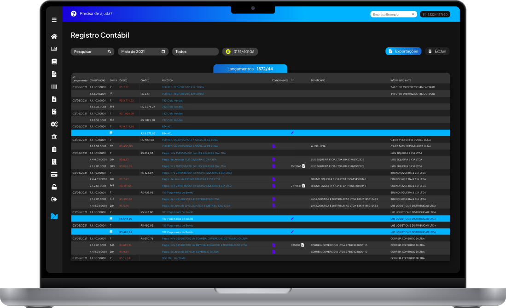

aqui vai um texto de subtitulo
Conte com a tecnologia Mister Contador para lançar suas movimentações com agilidade e segurança.
Com o Mister você cria automaticamente o histórico contábil perfeito, garatindo precisão e assertividade para seu serviço contábil.
Garantimos que os seus lançamentos contábeis sejam realizados em menos de um minuto, com poucas parametrizações.
Nossa Inteligência Contábil identifica autonomamente a conta de cada fornecedor e cliente, e registrando individualmente no Lançamento Contábil.
Seja o contador que revoluciona o seu próprio escritório com produtividade e segurança.
"Nossa produtividade aumentou em 60% depois que passamos a usar o Mister!"
Lucas, Contador"Consigo lançar um mês inteiro de movimento em menos de 10 minutos."
Ana Paula, Escritório SPElimine a Contabilidade Atrasada, de uma vez por todas, pare de depender dos seus clientes e torne a qualidade do seu Lançamento um diferencial competitivo!
Você está a um click de iniciar uma grande transformação no seu setor contábil. Torne-se um Mister Contador!
ConheçaNão. O Mister Contador atua como um lançador contábil inteligente, integrando-se aos dados do seu sistema ERP.
Não. O Mister realiza lançamentos contábeis com inteligência, não apenas conversões de arquivos ou layouts.
Se você quer reduzir tempo de lançamentos, retrabalho e dependência do cliente, o Mister é ideal para seu escritório contábil.